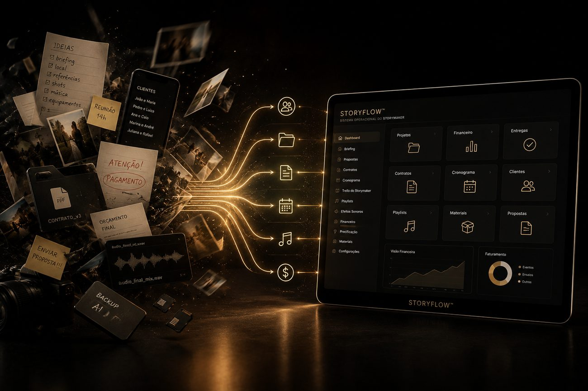
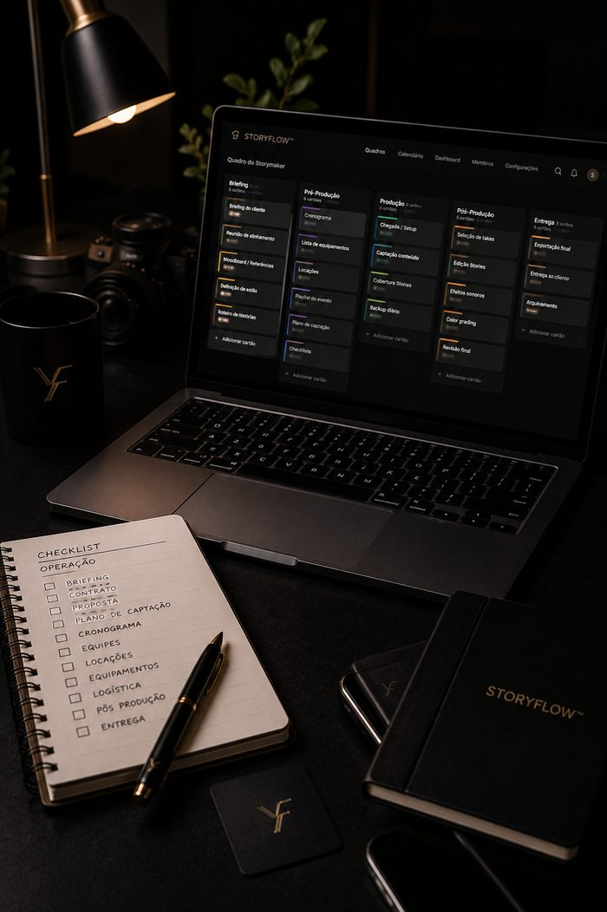
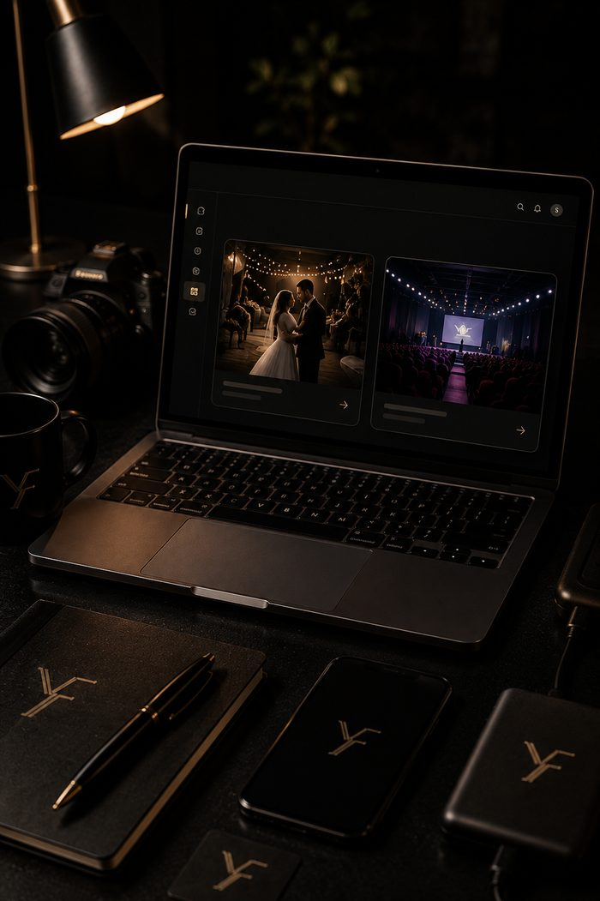
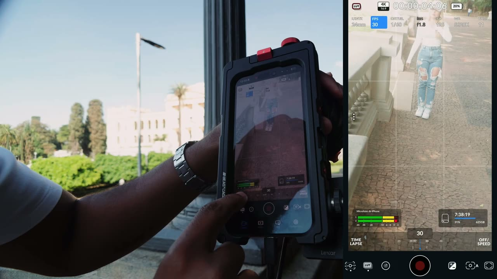
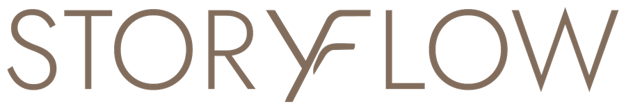
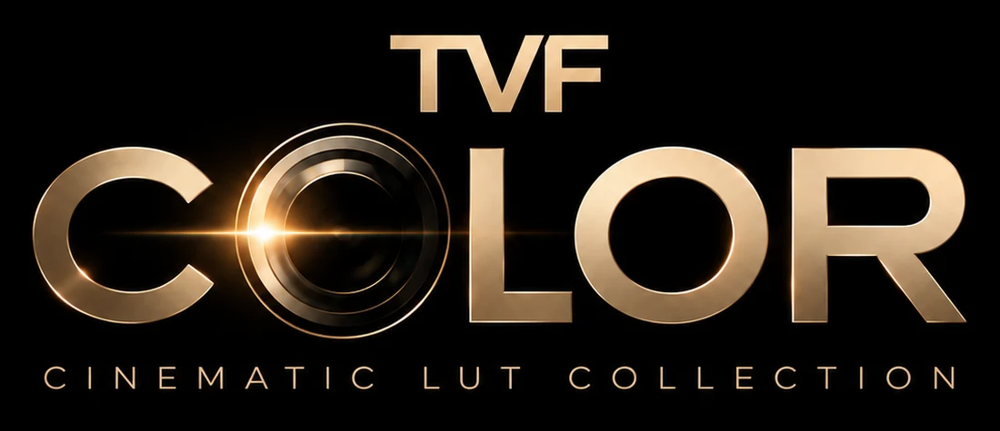

setup profissionalBlackmagic na prática.
Black Week TVF — iPhone 18 Pro Max
para os 100 primeiros do combo
- Mastergrip Telesin
- Microfone Neewer
- Filtros de cor Neewer
o métododo REC ao cliente
9 módulos, mais de 40 aulas, gravados em 4K. Passe o mouse em cada um para ver as aulas.
- Decisões antes do REC
- Quem grava vídeo × videomaker
- Por que o Blackmagic importa
- O mapa do Blackmagic
- Configuração base profissional
- Ajustar em qualquer ambiente
- Erros que acabam com a imagem
- O setup real de trabalho
- Lente é linguagem
- Gimbal ou mão livre
- Imagem premium começa antes do app
- Manual × automático
- Ler a luz
- Imagem premium em camadas de luz
- 10 erros que denunciam amadorismo
- Aula prática na rua
- Blackmagic configurado na prática
- Captação 1: vídeo fashion
- Captação 2: depoimento
- Captação 3: atleta em movimento
- A mentalidade do editor
- Decupagem e emenda de músicas
- Efeitos sonoros
- Correção de cor no CapCut
- Da trilha ao fechamento (4 aulas)
- Edição no celular, direto do SSD
- LUT não é filtro mágico
- Aula guia na prática
- Fluxo de trabalho com LUT
- Erros de LUT e cor
- Identidade artística
- Como começar mesmo sem nome
- Clientes toda semana
- Script de venda que fecha
- Meu método real de crescimento
- Por que bons profissionais continuam invisíveis
- Instagram que passa valor
- Portfólio que fecha cliente
o sistema operacional do storymakerStoryflow™
passe o mouseSeu talento te trouxe até aqui. Agora você precisa de estrutura para crescer: do primeiro contato com o cliente até a cobertura, a entrega e o financeiro.

- Preço definido no feeling, sem critério para chegar num valor justo
- Contrato improvisado ou combinado só por mensagem
- Informação do cliente espalhada entre conversas, prints e memória
- Financeiro sem visão do que entra, sai e sobra
O problema não é falta de talento. É falta de estrutura.
- Trello do Storymaker
- Briefing
- Checklists pré e pós-evento
- Estrutura de cobertura em tempo real

- Playlists organizadas
- Biblioteca de efeitos sonoros

- Modelos de contratos
- Proposta comercial
- Calculadora de precificação
- Dashboard financeiro
A calculadora de precificação Filmly usa uma IA treinada com mais de 650 referências reais do audiovisual brasileiro para dizer quanto cobrar em cada projeto.
não é curso: são ferramentas e materiais editáveis · 9 meses de construção · validado com mais de 40 profissionais
as cores que transformam vídeo em filmeTVF Color
O problema não é a sua câmera. Hoje quase todo mundo grava bem, e ainda assim parece vídeo, não filme. O que separa um do outro é a cor.
mesmo take, mesma luz: a cor entra enquanto o clipe roda
Você aplica no Blackmagic Camera, direto no celular, e no CapCut para desktop, na edição.
comboBlack Week
Vídeo profissional no celular não depende de câmera cara. Depende de saber gravar, dar cor e organizar o trabalho. São os três produtos do TVF, juntos.



prêmios daBlack Week
Live de abertura em 10/11 às 20h · sorteios em 18/11
prefere levar só um?
comprar separado é pagar mais e levar menos
tudo explicadoperguntas frequentes
Leia antes de comprar. Se ainda ficar alguma dúvida, chama a gente no WhatsApp.
01O que eu levo no combo da Black Week?+
Os três produtos do TVF juntos: o curso TVF ProRes (gravação em ProRes no celular com o Blackmagic Camera), o Storyflow (ferramentas e materiais para organizar a operação do storymaker) e o TVF Color (seis LUTs exclusivos em Apple Log, Apple Log 2 e Rec.709), mais o suporte individual na comunidade. Quem compra o combo até 23h59 de 10 de novembro leva também a masterclass exclusiva. Uma compra só, um pagamento só.
02Quanto custa e até quando vale cada preço?+
R$ 597 da abertura, na live de 10 de novembro às 20h, até 23h59 de 10 de novembro. A partir de 00h de 11 de novembro o combo passa para R$ 697, até 23h59 de 17 de novembro, quando a Black Week termina. Todos os horários são de Brasília. Sozinhos: o TVF ProRes sai por R$ 497 no dia 10 e R$ 597 de 11 a 17; o TVF Color e o Storyflow, por R$ 97 no dia 10 e R$ 119 de 11 a 17, cada um. Fora da Black Week: TVF ProRes R$ 1.297, TVF Color R$ 197 e Storyflow R$ 197; a masterclass vale R$ 697.
03É pagamento único ou mensalidade?+
Pagamento único. Não é assinatura e não tem cobrança todo mês. Se você parcelar no cartão, são parcelas da mesma compra.
04Quais as formas de pagamento? Posso parcelar?+
A compra é feita pela Kiwify, com Pix, boleto, cartão de crédito, dois cartões ou cartão + Pix. No preço de R$ 597, o cartão parcela em até 12x de R$ 61,74. O parcelamento tem acréscimo (juros do cartão); à vista no Pix você paga R$ 597. No preço de R$ 697, as parcelas aparecem na hora, no checkout.
05Posso comprar só um dos produtos?+
Pode. No dia 10, o TVF ProRes sai por R$ 497 e o TVF Color e o Storyflow por R$ 97 cada; de 11 a 17, R$ 597 e R$ 119 cada. Separados, os três somam R$ 691 no dia 10 e R$ 835 de 11 a 17; no combo saem por R$ 597 e R$ 697. A masterclass e o suporte individual vêm no combo. Os prêmios (iPhone, equipamentos e masterclass) são só para quem compra o combo.
06Como recebo o acesso?+
Depois que o pagamento é confirmado, você recebe o acesso no e-mail usado na compra. No Pix e no cartão a liberação é logo após a confirmação; no boleto, depois que o banco compensa o pagamento. O TVF ProRes e o TVF Color ficam na área de membros.
07Por quanto tempo tenho acesso?+
TVF ProRes: 1 ano a partir da compra, com todas as aulas, materiais e as atualizações desse período. TVF Color: os LUTs e as atualizações ficam disponíveis por 1 ano a partir da compra.
08E se eu não gostar?+
Você tem 7 dias de garantia pela Kiwify. Se não for para você, pede o reembolso dentro desse prazo e recebe o valor de volta.
09Quem concorre ao iPhone 18 Pro Max?+
Os 100 primeiros compradores do combo, conforme o regulamento da promoção. Durante a live de 10 de novembro, às 20h, a gente vai falar uma palavra secreta. No sorteio, em 18 de novembro, quem for sorteado precisa dizer essa palavra; se não souber, sorteamos de novo. A palavra só é dita na live, então para concorrer de verdade você precisa estar lá ao vivo.
10Como entro no sorteio de equipamentos e na masterclass?+
Compre o combo até 23h59 de 10 de novembro, o dia da live. Quem compra até esse horário ganha acesso à masterclass exclusiva e participa do sorteio de equipamentos (Mastergrip Telesin, microfone Neewer e filtros de cor Neewer), informando a palavra secreta da live. O sorteio é em 18 de novembro. Quem compra a partir de 11 de novembro não entra nesses dois.
11Preciso de uma câmera profissional?+
Não. Tudo é feito para o celular, com o app Blackmagic Camera. Para gravar em ProRes o iPhone precisa ser modelo Pro; se o seu ainda não for, a configuração, a luz, a captação e o posicionamento continuam valendo para qualquer aparelho.
12Preciso gravar em Log para usar o TVF Color?+
Não. O pack vem em três versões de cada LUT: Apple Log, Apple Log 2 e Rec.709. A versão Rec.709 é para quem não grava em Log. Você aplica no Blackmagic Camera, no celular, e no CapCut para desktop.
13O Storyflow é um curso?+
Não. O Storyflow são ferramentas e materiais prontos para usar na sua operação: Trello do Storymaker, briefing, checklists pré e pós-evento, estrutura de cobertura, playlists, biblioteca de efeitos sonoros, modelos de contrato, proposta comercial, calculadora de precificação e dashboard financeiro. Todos os materiais são editáveis.
14Posso compartilhar os LUTs ou dividir a compra?+
Não. A licença é individual e intransferível. Compartilhar, revender, fazer rateio ou colocar os arquivos em grupos é proibido e pode levar ao bloqueio do acesso.
15É só para casamento?+
Não. O que você aprende é decisão de imagem, cor e organização, e isso vale para qualquer nicho. Os exemplos do curso vão de casamento a vídeo fashion, depoimento e atleta em movimento.